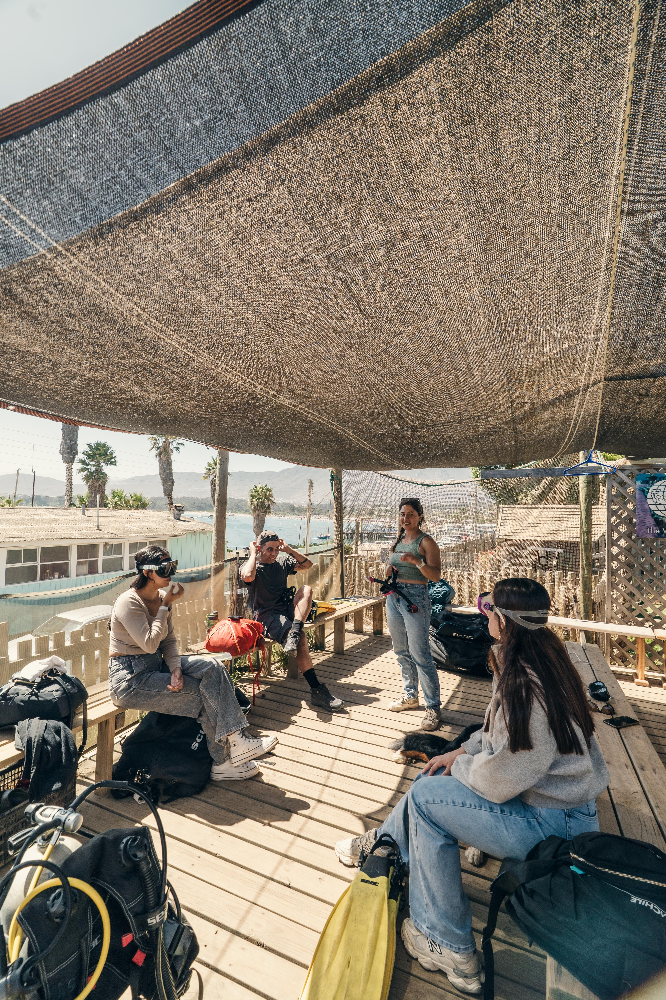

10:00
Comenzamos sin apuro
Nos reunimos frente al mar, nos conocemos y revisamos juntos cómo será la experiencia. Este es el momento para resolver dudas, relajarte y comenzar a conectar con el entorno.